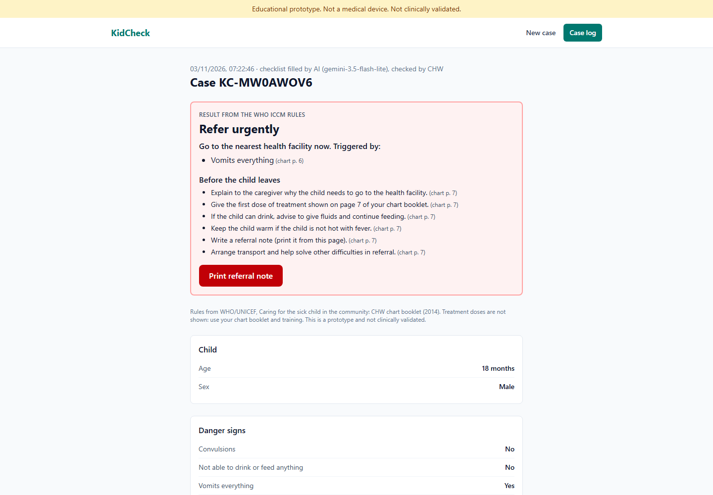

In rural communities, including much of Nigeria, the first person to see a sick child is often a community health worker with a few weeks of training and a paper chart. Under pressure, danger signs such as chest indrawing or not being able to drink get missed, and the child reaches a clinic too late.
KidCheck is a web app that helps the health worker check every danger sign in a child aged 2 months to 5 years and decide: refer urgently, treat at home, or no illness sign found. AI handles only language. Fixed, tested rules from the WHO/UNICEF chart booklet make the decision and show why.

React 19 · Vite · Tailwind CSS v4 · React Router · Google Gemini API (@google/genai) · Vercel serverless function and hosting · localStorage · Vitest, Testing Library, axe-core · MIT licence
| Primary | Community health workers and volunteers in low-resource settings |
| Also | Nursing and public health students practising assessments |
| Setting | Phone or laptop at the point of care; printed note for the facility |
Fewer missed danger signs, because every sign is asked about and an unanswered one blocks the decision. Faster referral, because the result is immediate and explains itself. A record of each case where there was none. Low cost: free tools, a phone browser, and no patient data leaving the device.
| AI | Gemini (gemini-3.5-flash-lite, free tier) with a JSON schema built from the checklist; output re-checked on the server |
| Decision | Plain JavaScript rule engine, no AI, 56 unit tests |
| Privacy | Key on the server only; cases stored in the browser; no names |
| Quality | 168 automated tests incl. full-journey UI tests; accessibility scan clean |